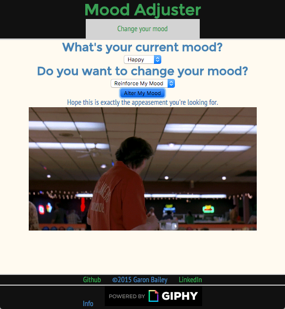

About Me
X

I'm a full-stack web developer currently based in Birmingham, AL.
I have a background in English and Biology. I have been doing front-end development for over a decade and recently began building on the back-end. I have experience with the MEAN Stack, Ruby on Rails, Git and Github, and SQL databases.
Feel free to contact me to discuss what I can build for you.
Full-Stack Web Developer
Websites and apps I've built

I used the Giphy API to pull a semi-randomized gif based upon the user input into a form. Built with a Ruby on Rails back-end framework with an Angular single-page front-end framework.
Github Repo
This is a full MEAN stack app where a user can create an account to store a list of movies they want to watch. I use the OMDb API to search films, which a user can then store and view the list. Upon viewing, they can delete the movie from their list. In Progress
Github Repo
This is a scientific research collaboration website. Built on Node and Express with a Mongo database, users can sign up and create research projects where they can add collaborators who all have updating access to the project. In Progress
Github Repo